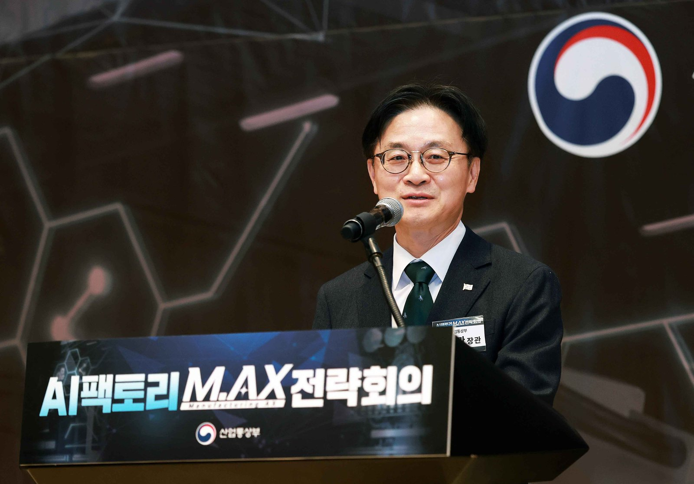
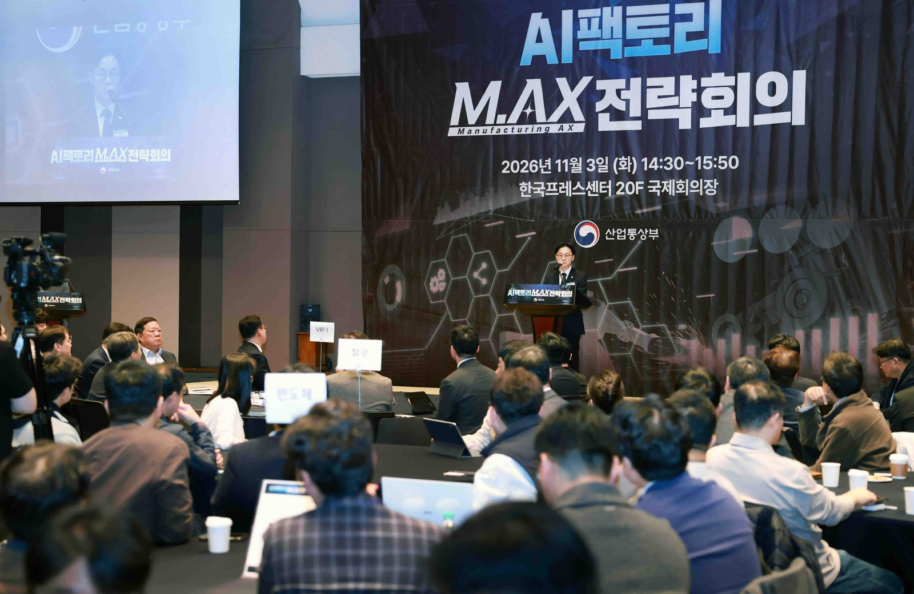

[AI 융복합 산업 사례①] 슈나이더 우한 공장, AI 들이고 기술자 이직률 48%에서 6%로
자동화 55% 늘자 일손 부족, AI 맞춤 교육과 생성형 AI 수리 안내
신입 적응 75일에서 15일로, 한국노동연구원은 생산직 AI 교육 부족 진단
AI경제저널=김갑봉 기자 | 중국 우한 슈나이더 일렉트릭 공장이 인공지능(AI)을 들여 기술자 이직률을 48%에서 6%로 낮췄다고 회사가 밝혔다(2026년 1월 발표). 세계경제포럼(WEF)은 2026년 1월 15일 이 공장을 등대공장 인재 부문에 올렸다.
등대공장은 세계경제포럼이 컨설팅 회사 맥킨지와 함께 만든 모범 공장 모임이다. 이번에 23곳이 새로 뽑혔다. 세계경제포럼은 고객 중심, 생산성, 공급망 회복력, 지속가능성, 인재 다섯 부문으로 나눠 뛰어난 점을 가렸다. 슈나이더 일렉트릭 코리아는 인재 부문이 이번에 새로 생겼다고 밝혔다.
슈나이더 일렉트릭(Schneider Electric)은 전기화·자동화·디지털화 기술을 파는 에너지 기술 기업이다. 100여 개국에 직원 16만 명을 둔다(2026년 1월 기준). 회사는 이번 선정으로 등대공장이 9곳이 됐다고 밝혔다(2026년 1월 기준). 이 가운데 5곳은 지속가능성 부문이다.
자동화가 부른 일손 부족
우한 공장은 자동화 수준을 55% 끌어올리고 제품 가짓수를 239% 늘렸다(2026년 1월 발표). 세계경제포럼은 이 변화가 큰 인력 문제를 낳았다고 적었다.
처음에는 직원 가운데 자동화 기술을 갖춘 사람이 20%뿐이었다. 신입 직원이 일을 익히는 데 75일이 걸렸다. 기술자 이직률은 48%에 이르렀다.
공장은 세 갈래로 대응했다. 첫째는 사람을 길러 내는 통로다. 직업학교 11곳과 손잡고 디지털 견습 과정과 AI 실습실, 장학금을 마련했다. 회사는 이를 미래 기술 인력이 끊이지 않고 들어오는 길이라고 설명했다.
AI가 짜는 맞춤 교육
둘째는 AI 역량 관리다. 스스로 판단해 일을 처리하는 AI가 직원마다 모자란 기술을 찾아 기록한다. 그리고 그 사람에게 맞는 교육을 골라 배정한다.
익힌 기술 수준에 따라 보상을 주는 제도도 이 AI가 맡는다. 회사는 직원 업무 역량 수준이 20%에서 76%로 올랐다고 밝혔다.
세계경제포럼은 세 갈래 대응을 묶은 성과로 직원 56%가 새 기술 교육을 받았다고 적었다(2026년 1월 발표). 신입 직원이 일을 익히는 기간도 75일에서 15일로 줄었다.
생성형 AI 정비 도우미
셋째는 사람 말을 알아듣고 글로 답하는 생성형 AI를 쓴 정비 도우미다. 기술자에게 수리 방법을 안내하고 조언하는 멘토 노릇을 한다.
회사는 이 도우미로 수리 시간을 줄였다고 밝혔다. 얼마나 줄었는지는 발표 자료에 없다.
되풀이하는 작업도 AI에 맡겼다. 회사는 엔지니어가 더 값진 일에 시간을 쓰게 됐다고 설명했다. 회사 발표로 신제품을 내놓는 데 걸리는 기간은 36개월에서 12개월로 줄었다.
일감을 고루 나눠 초과근무를 줄였고 배송 성과도 나아졌다고 회사는 밝혔다. 초과근무가 얼마나 줄었는지는 공개하지 않았다.
이직률 48%에서 6%로
회사는 생성형 AI 정비 도우미를 소개하며 기술자 이직률이 48%에서 6%로 떨어졌다고 밝혔다. 세계경제포럼은 세 갈래 대응을 묶은 성과로 5년에 걸쳐 기술자 이직률을 42% 줄였다고 적었다. 회사 수치로 따지면 42%포인트 차이다.
무라드 타무드(Mourad Tamoud) 슈나이더 일렉트릭 최고공급망책임자는 우한 공장 사례를 들었다. AI와 사람이 힘을 합칠 때 기업이 더 탄력 있는 인력을 키울 수 있음을 증명했다고 했다.
키바 올굿(Kiva Allgood) 세계경제포럼 매니징 디렉터는 올해 선정 공장들을 두고 오늘날 경쟁력이 효율만으로 정해지지 않는다고 말했다. 빠르게 알아채고 적응해 대응하는 능력을 함께 꼽았다.
같은 인재 부문에는 AUO 쑤저우 공장도 올랐다. 직원이 1만 명 가까이 되는 이 공장은 AI 면접과 디지털 교육, 근무표 자동 편성을 들였다. 세계경제포럼은 이 공장 이직이 70% 가까이 줄고 생산은 29% 늘었다고 적었다(2026년 1월 발표).
이 수치는 회사와 세계경제포럼이 발표했다. 슈나이더 일렉트릭은 등대공장 네트워크 자문위원회 회원사다. 우한 공장 전체 직원 수와 교육에 든 비용은 발표 자료에 없다. 이 공장이 무엇을 만드는지도 두 기관 발표 자료에 적혀 있지 않다.
한국 제조 현장과 교육
산업통상부는 2026년 11월 3일 서울 한국프레스센터에서 「AI 팩토리 확산전략」을 내놓았다. 그동안 국내 245개 기업 공장 AI 전환을 지원했다고 이날 밝혔다.

같은 날 산업통상부 집계로 38개 우수사례에서 생산성은 30.1% 오르고 불량률은 15.5% 내렸다. 2027년 정부안에는 「지역산단 기반 M.AX 아카데미 구축」 예산 47억2000만원이 들어 있다. 2027~2030년 사업이다.
한국노동연구원은 2026년 1월 30일 정책연구 보고서 「AI기반 제조업 혁신과 고용」을 냈다. 생산직 노동자 대상 디지털·AI 교육이 매우 부족하고 업종 사이 격차도 크다고 분석했다.
이 진단은 매출 200대 제조기업 가운데 공정에 AI를 쓰는 사업장 102곳 설문과 7개 회사 면접에서 나왔다(2025년 11~12월).
보고서는 AI가 대신하는 과업을 약 10%로 추정했다. 인력이 줄어든 경우에도 많은 기업이 해고 대신 부서 전환으로 고용을 지키고, 신규 채용을 줄이는 방식으로 대응한다고 분석했다.
연구진은 고용보험 자료로 AI 도입 기업과 미도입 기업 고용을 견줬다. AI 도입 기업 고용이 더 빨리 늘었지만, 이를 AI 효과로 단정할 수 없다고 한계를 밝혔다.

보고서는 AI·스마트공장·디지털 전환 지원 사업에 참여하는 기업이 전환훈련 계획과 전환배치 계획을 의무로 내게 하는 방안을 제안했다. 산업통상부는 M.AX 아카데미로 재직자 현장 AI 전환 역량을 키우고 청년 제조 AI 인력도 기르겠다고 밝혔다.
세계경제포럼은 2026년 6월 22일 새 등대공장 상 16개를 발표했다. 이 가운데 슈나이더 일렉트릭 공장은 미국 엘패소와 중국 베이징 두 곳이다.
참고문헌
- 노세리·장지연·조성재, 『AI기반 제조업 혁신과 고용』(정책연구 2025-16), 한국노동연구원, 2026년 1월 30일, https://repository.kli.re.kr/handle/2021.oak/12049
- 세계경제포럼(World Economic Forum), "Global Lighthouse Network Recognizes 23 New Sites, Launches AI Platform for Industrial Transformation", 2026년 1월 15일, https://www.weforum.org/media/global-lighthouse-network-recognizes-23-new-sites-launches-ai-platform-for-industrial-transformation
- 세계경제포럼(World Economic Forum), "New Global Lighthouse Sites Demonstrate How AI Is Rewiring Manufacturing and Supply Chains", 2026년 6월 22일, https://www.weforum.org/press/2026/06/new-global-lighthouse-sites-demonstrate-how-ai-is-rewiring-manufacturing-and-supply-chains/
- 산업통상부 산업인공지능정책과, "대한민국 제조업 판 바꾼다... 산업부, 제조AI 4단계 확산전략 가동", 2026년 11월 3일, https://www.motir.go.kr/kor/article/ATCL3f49a5a8c/172373/view
- 슈나이더 일렉트릭 코리아, "슈나이더 일렉트릭 중국 우한 공장, 세계경제포럼 '인재혁신 등대공장' 3곳 중 하나로 선정"(뉴스와이어 배포), 2026년 1월 27일, https://www.newswire.co.kr/newsRead.php?no=1027621
[사진 출처]
- 사진1·2 산업통상부, "AI 팩토리 전략회의 개최"(포토뉴스), 2026년 11월 3일, https://www.motir.go.kr/kor/article/ATCLb41cda0c5/29331/view
※ 이 기사는 인공지능기자 위민아이(Wemin_AI)와 협력해 작성했습니다.
관련기사
- [AI 노동시장①] AI 노출 업종에서 좁아진 청년 첫 일자리
- UN AI 허브, 인천 제조업 25만에 '국제 노동기준' 연다
- [코스피 5000의 이면②] 아틀라스는 2028년 공장에 들어온다, 로봇은 소비하지 않는다
- 수출 1209억달러 역대 최대, 제조업 고용보험 가입자는 외국인 빼면 4000명 줄어
저작권자 © AI경제저널 무단전재 및 재배포, AI학습 및 활용 금지